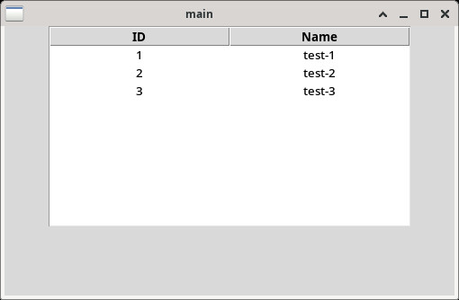

參考資訊：
https://tkdocs.com/shipman/
https://www.pythontutorial.net/tkinter/tkinter-window/
https://www.tutorialspoint.com/how-to-display-a-listbox-with-columns-using-tkinter
main.py
import tkinter as tk
from tkinter import ttk
root = tk.Tk()
root.title('main')
root.geometry('500x300')
tree = ttk.Treeview(root, column = ('c1', 'c2'), show = 'headings')
tree.pack()
tree.column('# 1', anchor = tk.CENTER)
tree.heading('# 1', text = 'ID')
tree.column('# 2', anchor = tk.CENTER)
tree.heading('# 2', text = 'Name')
tree.insert('', 'end', text = '1', values = ('1', 'test-1'))
tree.insert('', 'end', text = '2', values = ('2', 'test-2'))
tree.insert('', 'end', text = '3', values = ('3', 'test-3'))
root.mainloop()
執行
$ python3 main.py
